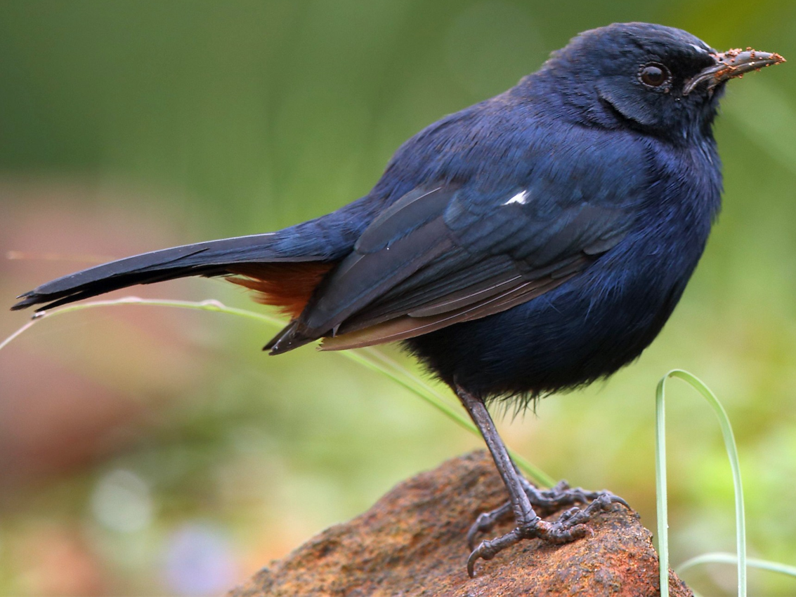
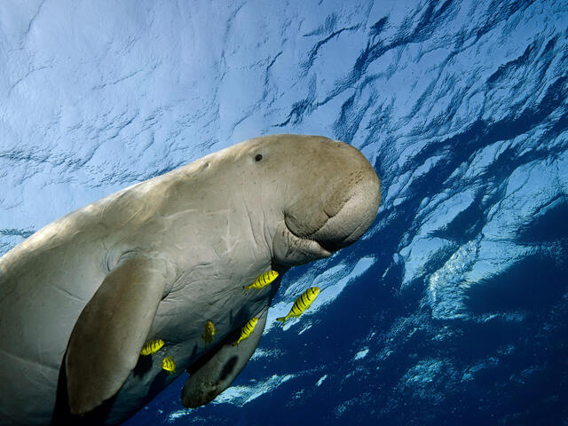
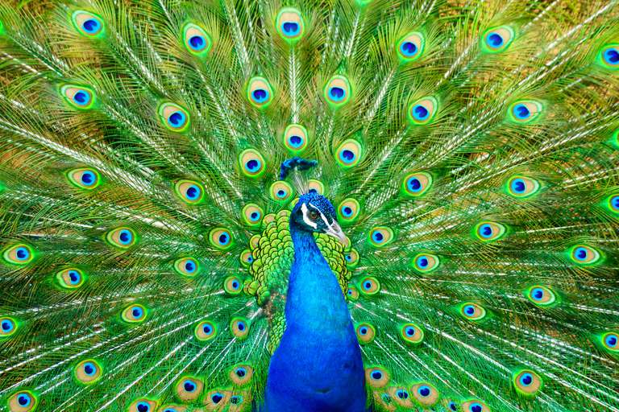

Location : Chennai, Tamil Nadu
Established in : 1977
Area : 2.70 km2 Flora : The park has a dry evergreen scrub and thorn forest, grasslands and water bodies with over 350
species of plants including shrubs, climbers, herbs and grasses and over 24 variety of trees, including the sugar-apple,
Atlantia monophylla, wood-apple, and neem.
Fauna : There are over 14 species of mammals including blackbuck, chital or spotted deer, jackal, small
Indian civet, common palm civet, bonnet macaque, hyena, pangolin, hedgehog, common mongoose, black-naped hare and three-striped
palm squirrel.
over 150 species of birds including grey partridge, crow pheasant, parrot, quail, paradise flycatcher, black-winged kite,
honey buzzard, pariah kite, golden-backed woodpecker, yellow-wattled lapwing, red-wattled lapwing, blue-faced malkoha,
shrikes, Asian koel, minivets, munias, parakeet, tailor bird, robin, drongo, and stone curlew.
The park is home to about 9 species of amphibians. There are also many kinds of reptiles, including saw-scaled viper and the
fan-throated lizard. Some species of tortoise and turtles—especially the endangered star tortoise, lizards, geckos, chameleons
and the common Indian monitor lizard—are found here, as well as a large variety of insects including 60 species of spiders and
60 species of butterflies.
Features : 8th smallest national park
Guindy National Park
Star tortoise

Indian robin
Gulf of Mannar Marine National Park
Location : It lies 1 to 10 km away from the east coast of Tamil Nadu, India for 160 km between Thoothukudi
(Tuticorin) and Dhanushkodi.
Established in : 1986
Area : 560 km2 Flora : Mangroves dominate the intertidal zones of the park islands.They consist of species of the genera
Rhizophora, Avicennia, Bruguiera, Ceriops and Lumnitzera. The introduced tree genus
Prosopis is dominant on land in all the islands. The flowering herb Pemphis acidula (family Lythraceae) is the only
endemic plant species. 12 species of sea grass and 147 species of seaweeds were recorded.
Fauna : The dugong, a vulnerable marine mammal, is the flagship mammal of the park. It is an important
habitat for the cetaceans: Indo-Pacific bottlenose dolphin, finless porpoise, spinner dolphin, common dolphin, Risso's
dolphin, melon-headed whale, and dwarf sperm whale. Larger whales include sperm whale, minke whale, Bryde's whale, sei whale,
and critically endangered species including humpback whale, fin whale, and blue whale.
Four species each of shrimp and lobster, 106 species of crab, 17 species of sea cucumber, and 466 species of mollusc including
271 gastropods, 174 bivalves, 5 polyplacophorans, 16 cephalopods and 5 scaphopods, 108 species of sponge, and 100 species
of echinoderm occur in the Gulf. The coral fauna includes 106 species from 30 genus of hermatypes and 11 species from 10 genus
of ahermatypes, including 13 new species, giving a total of 117 species from 14 families and 40 genus.
Stony coral species of families Poritidae and Faviidae constitute the dominant reef builders here.
Features : It is the core area of the Gulf of Mannar Biosphere Reserve which includes a 10 km buffer zone
around the park
Gulf of Mannar Marine National Park

Dugong
Dolphins
Indira Gandhi Sanctuary and National Park (Annamalai)
Location : Anaimalai Hills of Pollachi and Valparai taluks of Coimbatore District and Udumalaipettai taluk in
Tiruppur District, Tamil Nadu
Established in : 1976
Area : 1479.87 km2 Flora : There are over 2000 species plants of which about 400 species are of prime medicinal value. Wet
evergreen forest and semi-evergreen forest, montane shola-grassland, moist deciduous, dry deciduous, thorn forests and marshes.
South Western Ghats montane rain forests occur at higher elevations and are interspersed with montane grasslands, forming the
shola-grassland complex. Much of the original evergreen forest now contains introduced teak plantations. Bamboo stands and
reeds occur in the natural forests.
Fauna : Bengal tiger, Indian elephant, Indian leopard, dhole, Nilgiri tahr and lion-tailed macaque, Indian
brown mongoose, gaur, Malabar spiny dormouse, Nilgiri langur, rusty-spotted cat, sambar deer, sloth bear and smooth-coated
otter, Indian giant squirrel, Indian leopard, Indian pangolin, golden jackal, leopard cat, jungle cat, spotted deer, barking
deer, mouse deer, wild boar, common langur, bonnet macaque, Asian palm civet, small Indian civet, Indian gray mongoose,
striped-necked mongoose, ruddy mongoose, grey slender loris, Indian giant squirrel, Indian crested porcupine,
Indian porcupine and three-striped palm squirrel.
Over 250 species of birds have been identified in the park. Some of the most important groups are cormorants, ducks, teal,
darter, partridge, quail, jungle fowl, spurfowl, Indian peafowl, parakeets, hornbills, barbets, drongos, orioles, shrikes,
warblers, Old World flycatchers, woodpeckers, leafbird, trogons, kingfishers, storks, egrets, Lesser fish eagles, hawk eagles,
harriers, falcons, kites, owls and nightjars. It is also home to the near-threatened great Indian hornbill.
Amphibians are the ancient and elusive purple frog, toad skinned frog, thin-legged leaping frog and Forest torrent frog,
Gadgil's torrent frogs, Anaimalai flying frog, bush frogs and caecilian such as the Uraeotyphlus. Reptiles include the
endangered Indian rock python, King cobras, Indian monitor lizards, Malabar pit vipers, Large-scaled green pit vipers,
Nilgiri keelbacks, some 20 species of curious little shield tail snakes, Large-scaled forest lizards, Nilgiri forest
lizard, flying lizards, Ristella skinks forest cane turtles, and Travancore tortoises.
Features : Under consideration by UNESCO as part of The Western Ghats World Heritage Site.
Indira Gandhi Sanctuary and National Park (Annamalai)
Golden jackal

Peafowl
Mudumalai National Park
Location : Nilgiri Mountains in Tamil Nadu, in the Nilgiri District and shares boundaries with the states of
Karnataka and Kerala.
Established in : 1940
Area : 321 km2 Flora : Mudumalai National Park harbours 498 plant species comprising 154 tree, 77 shrub, 214 herb and 53
vine species. Teak and axlewood are the dominant tree species with a density of more
than 105 trees per hectare. Prominent tree species include flame-of-the-forest, Indian laurel, kusum tree, weaver's beam tree,
Malabar kino tree , Indian rosewood, Malabar plum, silk-cotton tree and Indian beech. Mango and persimmon grow along
river courses.
Fauna : Indian leopard, Bengal tiger, dhole, gaur, Asian elephant, sambar deer, chital, Indian spotted
chevrotain, Indian muntjac, striped hyena, sloth bear, fire ants, honey bees, Asian palm civet,
small Indian civet, ruddy mongoose, stripe-necked mongoose, brown palm civet, Indian grey mongoose, pill millipedes, dung
beetles, rodents, birds, reptiles, etc.
Birds include Indian peafowl, Bonelli's eagle, crested serpent eagle, Indian grey hornbill, Malabar grey hornbill, rufous-bellied
eagle, changeable hawk-eagle, besra, crested goshawk, crested honey buzzard, white-rumped shama, greater flameback, black-
rumped flameback, white-bellied woodpecker, greater racket-tailed drongo, Indian pond heron, white-throated kingfisher, blue-
winged parakeet, Nilgiri wood pigeon, common emerald dove, yellow-footed pigeon, red-vented bulbul, red-whiskered bulbul, red
spurfowl, grey junglefowl, painted bush quail, crimson-backed sunbird, Loten's sunbird, forest wagtail, white-browned wagtail,
black-and-orange flycatcher, Eurasian golden oriole, and black-hooded oriole.
Features : It was declared as a Tiger Reserve under Project Tiger in April 2007.
Mudumalai National Park
Black-and-orange flycatcher
Bonelli's eagle
Mukurthi National Park
Location : western corner of the Nilgiris Plateau west of Ootacamund hill station in the northwest corner of
Tamil Nadu state in the Western Ghats mountain range of South India
Established in : 2001
Area : 78.46 km2 Flora : The area is home to numerous endemic plants particularly of the scapigerous annual Impatiens
plants. Alchemilla indica and Hedyotis verticillaris are found only within or on the fringes of this park.
Fauna : Nilgiri tahr, Indian elephant, Bengal tiger, Nilgiri marten, Nilgiri langur Bonhote's mouse, leopard,
bonnet macaque, sambar deer, barking deer, mouse deer, otter, jungle cat, small Indian civet, wild dog, jackal, black-naped
hare, shrew, Malabar spiny dormouse and soft-furred rat.
Avifauna consists mostly of hill birds including the threatened laughingthrush, whistling thrush, woodcock, wood pigeon,
black-and-orange flycatcher, Nilgiri flycatcher, grey headed flycatcher black bulbul, white-eye, Nilgiri pipit. The predatory
black-winged kite, kestrel and black eagle may be seen in the grasslands. Butterflies with Himalayan affinity like the blue
admiral, Indian red admiral, Indian fritillary, Indian cabbage white and hedge blues are seen here. A large variety of reptiles
are also found here.
Features : UNESCO World Heritage Site